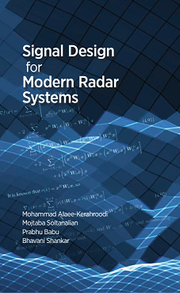
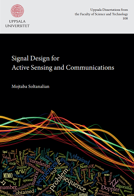

Mojtaba Soltanalian
I earned the B.Sc. from Sharif University of Technology (2009) and the Ph.D. in Electrical Engineering (signal processing) from the Department of Information Technology at Uppsala University (2014). Prior to UIC, I held research appointments at the California Institute of Technology (Caltech) and at SnT, University of Luxembourg.
My research spans optimization, statistical signal processing, and machine learning, with emphasis on principled signal design for sensing and communications, few-bit and mixed-precision techniques, and on the foundations of scalable, reliable AI.
I am a Senior Member of the IEEE; serve on the editorial boards of IEEE Transactions on Signal Processing and IEEE Transactions on Aerospace and Electronic Systems (Radar Systems); and chair the IEEE Signal Processing Society Chicago Chapter. My work has been recognized, among others, with a IEEE Signal Processing Society Young Author Best Paper Award, and the European Association for Signal Processing Best PhD Award.
Director of Graduate Admissions and Recruitment
Associate Professor, Electrical & Computer EngineeringAssociate Professor, Computer Science (by courtesy)
Director, WaveOPT Laboratory
University of Illinois Chicago
Chair, IEEE Signal Processing Society Chicago Chapter
Founder, AI-CERTIFIED.ORG
Office: SEO 1031
E-mail: msol@uic.edu
Research Overview
Books & Monographs
 |
Rose Window Designs (2025)Rosa Universalis: A Modern Codex of Rose Windows |
|  | Radar Textbook (2022) |
|  | Ph.D. Thesis (2014)Signal Design for Active Sensing and Communications |
News / Quick Access
8/2022: Received new ONR grant supporting our high-risk high-reward fundamental research to make "Data-Aware Guarantees for Mathematical Optimization and Learning" possible.
11/2021: Elected as member of the Sensor Array and Multichannel (SAM) Technical Committee of the IEEE Signal Processing Society.
5/2021: Honored to serve the signal processing community as an Associate Editor for IEEE Transactions on Signal Processing.
4/2021: Truly appreciate the continued support and new Gift Funding from Mitsubishi Electric Research Laboratories.
2/2021: Received a UIC-TEC Office of Global Engagement Seed Award for collaborative research.
2/2021: Honored to serve the Chicago signal processing community as the IEEE SPS Chapter Chair.
5/2020: Truly appreciate the Gift Funding from Mitsubishi Electric Research Laboratories.
11/2019: Will serve as a Technical Area Chair for the 2020 Asilomar Conference.
3/2019: Received the UIC Discovery Partners Institute (DPI) Seed Funding Program Award.
9/2018: Received the 2018 European Signal Processing Association (EURASIP) Best PhD Award.
7/2018: Received new 3-year NSF grant supporting our research efforts on "Waveform Design and Processing for Next-Generation Radar Systems".
5/2018: Received the 2018 UIC College of Engineering Research Award.
12/2017: Received the 2017 IEEE Signal Processing Society (SPS) Young Author Best Paper Award.
5/2017: Received new 4-year NSF grant supporting our research efforts on "Low-Resolution Sampling with Generalized Thresholds".
9/2017: Received new DoD instrumentation grant- "Three Birds with One Stone: High-Frequency Instrumentation for Semiconductor Device Characterization, Radar and Communication System Measurements".
Teaching: ECE 531- Detection and Estimation Theory.
Teaching: ECE 516- Adaptive Digital Filters.
Teaching: ECE 418- Statistical Digital Signal Processing.
Teaching: ECE 317- Digital Signal Processing (DSP) I.